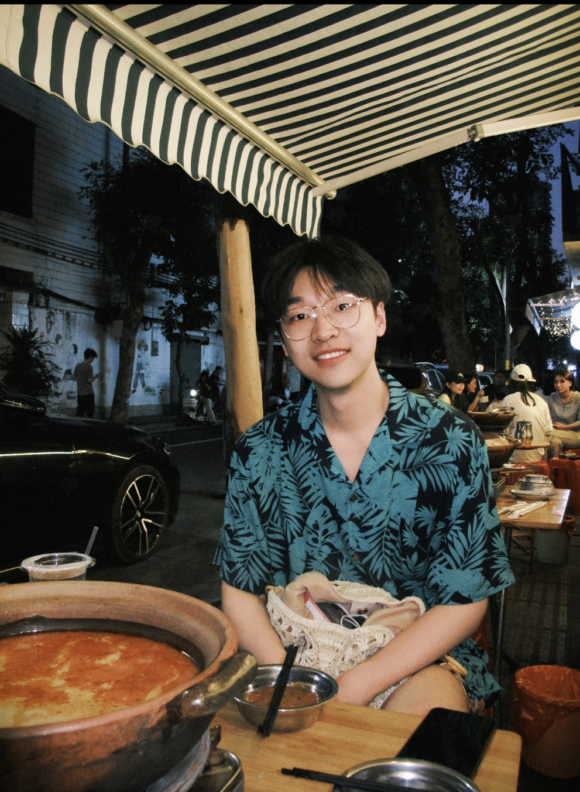

About
Researching agents that can reason, act, and improve over long horizons.
Research Pillars
Three threads anchor the way I build systems and benchmarks.
My work moves between foundation model post-training, interactive agent design, and reinforcement learning infrastructure, with a bias toward problems that demand both algorithmic depth and production realism.
Selected Impact
Signals of scale, contribution, and research velocity.
These highlights span accepted papers, open-source traction, model-building work, and benchmark releases across academia and industry.
Experience
Industry and research roles connected by one theme: usable intelligence.
I have worked across cloud research, frontier model teams, open-source RL, and simulation-heavy environments, usually at the boundary where systems must turn research ideas into reliable capabilities.
Featured Projects
Systems, benchmarks, and open-source work that define the portfolio.
The emphasis here is not only model quality, but also tooling, evaluation design, and deployment-minded research infrastructure.
Publications
Representative papers first, then a complete research record.
Ongoing submissions remain visible, but every entry carries an explicit status so the page stays accurate about what is accepted, published, or still under review.
Full Publications
Complete list across agents, multimodal systems, and reinforcement learning.
Academic Blocks
Education, service, teaching, and research-adjacent output.
Supporting academic work is kept compact here so the homepage stays narrative-led while still functioning as a complete professional record.